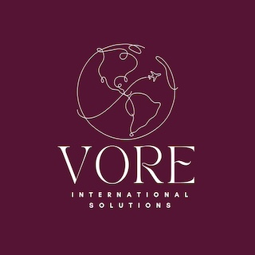

O visto CR1 (Cônjuge de Residente Condicional) é uma categoria de visto de imigrante destinada aos cônjuges de cidadãos americanos que desejam se estabelecer nos Estados Unidos de forma permanente. Este visto é concedido para permitir que o cônjuge estrangeiro entre nos Estados Unidos como residente permanente legal, com a intenção de viver com o cônjuge cidadão americano. O processo para obter o visto CR1 envolve várias etapas, começando com a petição do cônjuge cidadão americano junto ao Serviço de Cidadania e Imigração dos Estados Unidos (USCIS). Após a aprovação da petição, o processo é encaminhado para o Departamento de Estado para processamento adicional no consulado ou embaixada dos Estados Unidos no país de residência do cônjuge estrangeiro. Uma vez que a petição é aprovada e todas as etapas do processo são concluídas com sucesso, o cônjuge brasileiro recebe o visto CR1 (menos de dois anos de casados) ou o IR1(mais de dois anos de casados) , que permite a entrada nos Estados Unidos como residente permanente. Após a entrada nos Estados Unidos com o visto CR1, receberá um Green Card (cartão de residência permanente) por correio e terá status de residente condicional por dois anos. Após esse período, o cônjuge pode solicitar a remoção das condições e obter o status de residente permanente sem restrições. Caso seja o visto IR1, receberá um Green Card (cartão de residência permanente) por correio e terá status de residente por dez anos. É importante seguir todas as instruções e requisitos do processo de visto CR1|IR1 cuidadosamente para evitar atrasos ou problemas durante o processo. Um bom planejamento e preparação podem ajudar a tornar o processo de imigração mais tranquilo e bem-sucedido para o casal. Esse web site foi feito para orientar voce sobre o processo de aplicação do visto de cônjuge. Todas as informações disponibilizadas aqui, são com base nos sites governamentais americanos, experiencia propria e trocas de informaçoes nas comunidades em grupos no whatsapp.
VALORES DO PROCESSO (ATULIZADO EM 01/04/2024)
- USCIS $625
- NVC $445
- CONSULTA MEDICA R$950,00 + VALORES DE EXAMES E VACINAS, VARIA DE ACORDO DE PESSOA PRA PESSOA.
- DESPESAS COM EXAMES E VACINA SÃO COBRADOS EM REAIS.
DICAS PARA ANTES DE APLICAR PARA FASE USCI- VISTO CR1
UNIDOS DO CR1 - Grupo/Comunidade no Whatsapp de pessoas que estão planejando seguir com o processo de visto de cônjuge CR1|IR1.

VÍDEO - DEPOIMENTO - EXPLICANDO DE UMA FORMA GERAL COMO É ESSE PROCESSO.
CASAMENTO ONLINE POR UTAH
Casamento Online válido nos Estados Unidos, aceito no processo do CR1|IR1 A opção de casamento via Cartório de Utah é uma opção barata, rápida e prática para casais que estão morando longe um do outro. O processo de casamento nos Estados Unidos é diferente do Brasil. A opção perfeita para quem imaginou casar fora da igreja, ou de lugares obvious. Precisa apenas de internet. Existem cerimonialistas que falam português. Lembrando que essa opção é aceita e não tem nenhuma diferença legal comparada com casamentos realizados pessoalmente. PARA DAR ENTRADA NA FASE DO USCIS O CASAL DEVE CONSUMAR O CASAMENTO , SE ENCONTRANDO PESSOALMENTE. Tempo de processos: +- 2 meses.
Link do site do Cartório:UTAH CARTÓRIO
VIDEO - EXPLORANDO O SITE DO CARTÓRIO DE UTAH
DICA VALIOSA, CONTRATE ACESSÓRIAS E NÃO ADVOGADOS
O uso de advogados não é relevante e nem obrigátorio. Os valores com Advogados é milhares de dolares e segundo relatos é só decepção, erros basicos de envio de documentos e sem proeficiencia no processo de visto de imigrante. Caso não tem tempo ou alguma dificuldade, recomendo fortemente o uso de acessoria, duas acessoras que vem fazendo diferença e ajudando milhares de pessoas nesse processo desgastante. O valor é justo e atendimento perfeito.Esse website não é patrocinado, a indicação é apenas uma forma de reconhecer o ótimo trabalho delas. Dica boa é dica compartilhada!
REPRESENTANTE:BRENDA
REPRESENTANTE: NICKY
